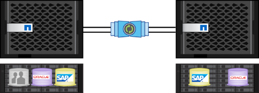

Descripción general de las funciones de ONTAP 9.9.1 de NetApp
Descripción general de las funciones de ONTAP 9.9.1 de NetApp
Protección de datos
 Sugerir cambios
Sugerir cambios
En el contexto de este documento, la protección de datos se refiere tanto a la noción de replicación de datos externa como a la protección de los datos en ejecución y en reposo. En esta sección se tratan las últimas mejoras en la protección de datos de ONTAP 9.8.
Seguridad
Cada versión de ONTAP se crea con nuevas funciones y mejoras de seguridad, y ONTAP 9.8 no difiere en este sentido. Para obtener más información sobre las funciones de seguridad de ONTAP, consulte "TR-4569: Guía sobre la seguridad reforzada de ONTAP 9".
Análisis seguro
En entornos con datos confidenciales o confidenciales, tener un archivo escrito por error en un volumen al que puedan acceder los usuarios que no tengan acceso a dicho archivo crea lo que se conoce como derrame de datos. Esto crea un escenario en el que se deben eliminar volúmenes enteros y los discos se depuran para limpiar el derrame.
El cifrado de volúmenes y Secure Purge de NetApp ofrecían una forma de mitigar esos posibles desastres al ofrecer un modo de eliminar criptográficamente los archivos individuales al eliminar la clave de cifrado de seguridad asociada con el archivo. Una vez pasada esta clave, esos datos ya no se pueden recuperar desde el disco. Este proceso ha sido validado externamente por una empresa de recuperación de datos utilizando las directrices NIST SP 800-88 para saneamiento de medios.
Sin embargo, incluso la purga segura tiene sus límites; por ejemplo, si debe purgar un archivo, debería realizar un movimiento de volumen, lo cual requiere espacio disponible en el sistema. Si utiliza SnapMirror, deberá volver a establecer la base después de una operación de purga segura.
El análisis seguro en ONTAP 9.8 elimina estas limitaciones de la siguiente manera:
-
Proporcionar un procedimiento simple, in-situ para los archivos de cifrado.
-
Le permiten mantener los duplicados de SnapMirror existentes en su sitio sin necesidad de volver a crear la base.
IPSec
IPSec es un mecanismo estándar para realizar un cifrado independiente de las aplicaciones a través del cable. Con IPSec, puede cifrar el tráfico de red independientemente del protocolo que esté utilizando. Esto proporciona oportunidades para la simplificación, especialmente con NFS, donde el cifrado Kerberos es difícil de configurar y utilizar, además de proporcionar la única forma de cifrar el tráfico iSCSI por el cable.
Ahora ONTAP 9.8 agrega compatibilidad con IPSec. La implementación de ONTAP de IPSec aprovecha un secreto o clave precompartida (PSK) con el cliente de conexión. Estos clientes incluyen cualquier sistema operativo reciente que aproveche IKEv2 con PSK. Tenga en cuenta que el sistema operativo Windows no admite IKEv2 con PSK.
Módulo de plataforma de confianza
Con el nuevo módulo de plataforma de confianza (TPM) en ONTAP 9.8, el TPM físico sella las claves de cifrado del gestor de claves incorporado (OKM), lo que ofrece mayor seguridad y protección. El cambio al TPM es un proceso no disruptivo.
Cifrado de volúmenes de NetApp
El cifrado de volúmenes de NetApp (NVE) es una solución de software que permite el cifrado de cualquier volumen de datos en cualquier tipo de unidad donde se encuentre habilitado, con una clave única para cada volumen. Esta función está disponible desde ONTAP 9.1.
ONTAP 9.8 aporta compatibilidad NVE a los volúmenes raíz de los nodos, que contienen archivos de registro, backups de configuración de clústeres, archivos principales y otra información relacionada con el sistema que puede que desee proteger con el cifrado conforme a FIPS-140-2.
SnapMirror Cloud
SnapMirror es una tecnología de replicación líder en el sector en ONTAP que proporciona una forma para que los administradores de almacenamiento creen copias exactas de conjuntos de datos a través de una conexión WAN y solo repliquen los bloques modificados para reducir el uso de la red.
En las últimas versiones de ONTAP, se ha ampliado la compatibilidad con SnapMirror para incluir sistemas que no sean ONTAP, como el "Element OS de SolidFire". ONTAP 9.8 ahora proporciona una forma de aprovechar SnapMirror para replicar en el cloud o en cubos de objetos S3 en las instalaciones.

Aprovechando el nuevo "Motor SnapDiff 3.0", SnapMirror puede replicar datos de forma segura y eficaz desde volúmenes NAS de ONTAP a bloques de almacenamiento de objetos. Esto proporciona movilidad del cloud híbrido en todo el Data Fabric de ONTAP.
-
Los backups de copias Snapshot en el almacenamiento de objetos en cloud con gestión eficiente del espacio conservan la eficiencia del almacenamiento.
-
Admite restauración de volumen completo y de archivo único
En ONTAP 9.8, SnapMirror Cloud requiere la orquestación mediante uno de los dos métodos siguientes. No es compatible con System Manager ni directamente mediante API o CLI.
-
A través de una aplicación de partner ISV con licencia que crea y gestiona los flujos de trabajo de backup y restauración. Se necesita una licencia de SnapMirror Cloud.
-
A través de la Cloud Backup Service. No se necesita una licencia de SnapMirror Cloud.
Si quiere más información sobre SnapDiff y SnapMirror Cloud, consulte los siguientes recursos:
Continuidad del negocio de SnapMirror (SM-BC)
"SnapMirror síncrono" (SM-S) se introdujo en ONTAP 9.5 y ofrece replicación de datos síncrona con gestión eficiente del volumen y del almacenamiento, de la que dependen las empresas para backup, recuperación ante desastres y movilidad de datos. SM-S replica los datos en los volúmenes FlexVol de NetApp entre sistemas de almacenamiento ONTAP completamente redundantes ubicados en centros de datos o regiones metropolitanas, con un tiempo de ida y vuelta (RTT) menor a 10 ms para lograr un objetivo de punto de recuperación cero y un objetivo de tiempo de recuperación casi nulo.
ONTAP 9.8 toma el concepto de SnapMirror síncrono en entornos SAN y aporta la funcionalidad de conmutación automática al respaldo para aplicaciones en el grupo de consistencia, utilizando System Manager para configurar y el mediador de ONTAP para gestionar y mantener la continuidad del negocio en caso de interrupción del servicio. Como la relación es síncrona, las aplicaciones no se perderán ni un solo golpe cuando se produzca una conmutación por error. La versión inicial de la continuidad empresarial de SnapMirror solo admite cargas de trabajo SAN (iSCSI y FCP).
Si quiere más información sobre la continuidad del negocio de SnapMirror, consulte "Podcast de Tech OnTap, episodio 267: Continuidad del negocio de SnapMirror".
MetroCluster
El software MetroCluster (MC) de NetApp es una solución que combina el clustering basado en cabinas con replicación síncrona para ofrecer una disponibilidad continua y cero pérdida de datos al coste más bajo. La administración del clúster basado en cabinas es más sencilla, puesto que se eliminan las dependencias y la complejidad que suelen asociarse al clustering basado en hosts.

MetroCluster duplica de forma inmediata todos los datos de misión crítica transacción por transacción, con lo que proporciona acceso ininterrumpido a las aplicaciones y los datos. A diferencia de las soluciones de replicación de datos convencionales, MetroCluster funciona sin problemas con el entorno del host para ofrecer disponibilidad de datos continua y eliminar, al mismo tiempo, la necesidad de crear y mantener scripts complejos de conmutación al nodo de respaldo.
Con MetroCluster, es posible realizar las siguientes tareas:
-
Obtenga protección frente a fallos de hardware, red o instalaciones con una conmutación transparente
-
Elimine los tiempos de inactividad planificados y sin planificar y la gestión de cambios
-
Actualice el hardware y el software sin interrumpir las operaciones
-
Realice puestas en marcha sin scripting ni dependencias de aplicaciones o sistemas operativos complejos
-
Obtenga una disponibilidad continua para VMware, Microsoft, Oracle, SAP o cualquier aplicación crítica
ONTAP 9.8 proporciona las siguientes mejoras en las funciones de MetroCluster.
-
Nuevo soporte para plataformas de gama básica y media. AFF A250, FAS500f, FAS8300, FAS 8700 Hybrid y A400 de NetApp. Para las instalaciones nuevas de A220, FAS2750 y FAS500f, se puede especificar que una VLAN sea mayor que 100 y menor que 4096.
-
Transición no disruptiva de clústeres MC-FC a MC-IP. sólo clústeres de cuatro nodos; MCC de dos nodos requiere tiempo de inactividad. Fácil para migrar a MC IP durante la próxima actualización tecnológica.
-
Ahora se admiten agregados no reflejados para MC IP. sólo se replican los agregados deseados al sitio de recuperación tras fallos para obtener más granularidad de la aplicación.
-
Compatibilidad con el switch Cisco 9336C-FX2 y con A400, FAS 8300 y FAS 8700 en el switch BES-53248 con una licencia de puerto ADICIONAL DE 100 G.
Para obtener más información sobre MetroCluster, consulte los siguientes recursos: